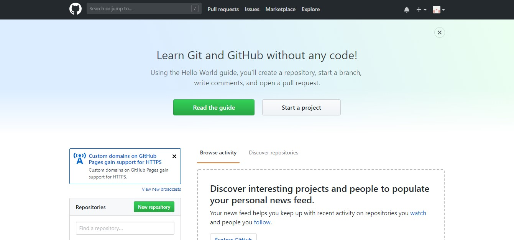
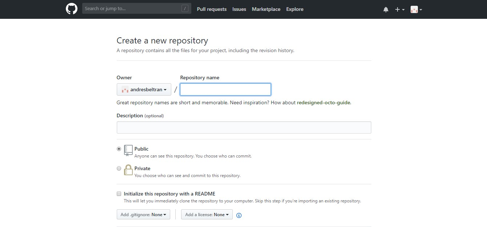

GitHub es una plataforma que permite crear repositorios de un código GitHub permite que se puede trabajar con otros usuarios el código sincronizado todo esto depende de los permisos que da la persona administradora a los demás participantes, siendo esto muy beneficiario para el trabajo en equipo, al trabajar de esta manera se puede mejorar un software mucho más rápido y así alcanzar la meta deseada, todo cambio realiza puede ser revisado por el dueño del proyecto este decidirá si toma los cambio y los adjunta con el repositorio original.
Versionar código:esto quiere decir que se pueden guardar cambios en cualquier momento, teniendo la facilidad de ver el historial de los cambios efectuado y de esta manera poder regresar a una versión anterior o si se quiere compararlas.
Trabajo en equipo:Esta herramienta se presta para trabajar una idea con las personas que quieran, al terminar ya el proyecto otras personas pueden verlo y opinar en el repositorio.
Visor de código:GitHub tiene un visor de código que mediante el navegador se puede consultar el contenido de un archivo determinado con la sintaxis correspondiente al lenguaje en el que está escrito, con este visor se pueden copiar porciones de código sin bajar todo el repositorio.
Compatibilidad:lo bueno de GitHub es que es una herramienta web así que no depende de un sistema operativo, pero si el usuario la desea instalar es compatible con todos los S.O.
De click en el video donde podrás observar la instalación y operaciones básica que tiene la herramienta Git.